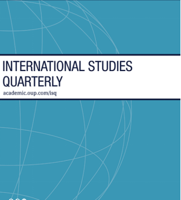
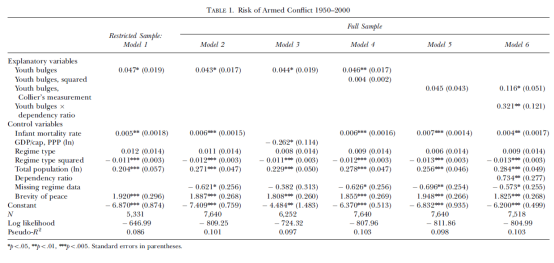
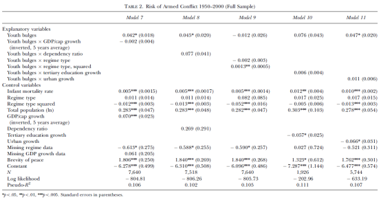
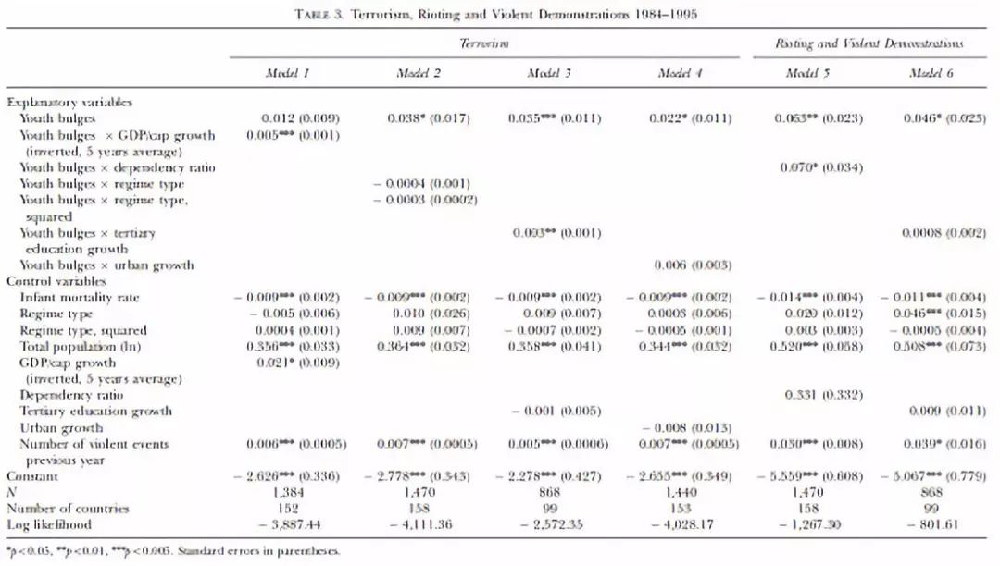
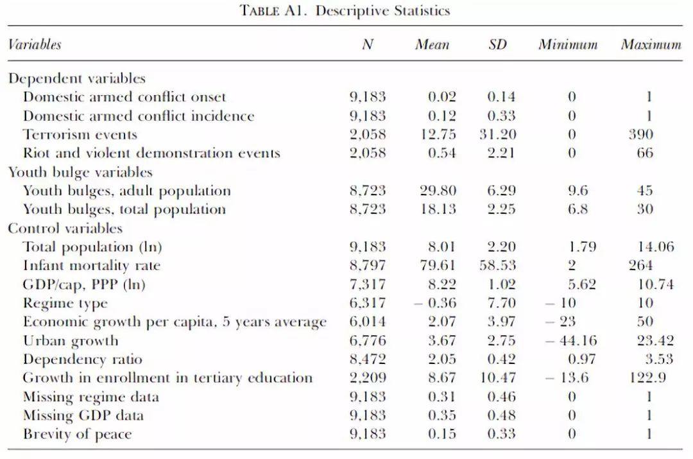
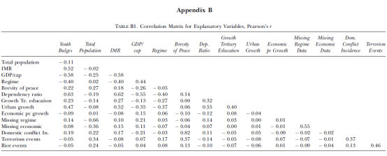

收录于合集

作品简介
【作者】 Henrik Urdal，奥斯陆和平研究所（Peace Research Institute Oslo，PRIO）所长和研究员，《和平研究期刊》（ Journal of Peace Research ）主编，主要研究兴趣是人口与政治暴力、环境气候变化与武装冲突、人口统计政治等。这篇文章是他被引用次数最高的论文之一，根据谷歌学术的数据，其被引用次数已超过850。
【 编译】 金磊（国政学人编译员，北京大学国际关系学院博士研究生）
【校对】 兰星辰
【审核 】 徐垚晟
【排版】 梁鑫昱
【 来源 】
Urdal, H. (2006). A clash of generations? Youth bulges and political violence. International studies quarterly, 50 （3）, 607-629.
期刊介绍

《国际研究季刊》（ International Studies Quarterly ）是国际研究协会的旗舰期刊，由牛津大学出版社每年发行四期，旨在发表与国际研究中重要理论性、实证性、规范性主题相关的领先学术成果。根据Journal Citation Reports的数据，2018年期刊的影响因子为2.172。
代际冲突 ?青年膨胀与政治暴力
A Clash of Generations? Youth Bulges and Political Violence
内容提要
经常有人认为，特别庞大的青年群体，即所谓的“青年膨胀”，使国家更容易遭受政治暴力。在研究内战的两个重要理论框架内，青年膨胀有可能增加政治暴力的机会和动机。这一说法在1950-2000年期间国内武装冲突和1984-1995年恐怖主义和暴乱事件数据的跨国面板统计模型中得到了实证检验。对青年膨胀会增加武装冲突、恐怖主义和暴乱这三种形式的政治暴力风险的预期得到了经验证据的支持。青年膨胀提供了大量机会成本低的年轻人，进而为暴力提供了更多的机会；青年膨胀更有可能导致机构拥挤，特别是失业现象，暴力动机也可能因此更为强烈。此外，一些背景因素被认为有可能增强青年膨胀的影响。比如研究表明，在专制政体中，青年膨胀与内部武装冲突风险的增加相关，在高度民主的政体中也发现了类似的影响。青年膨胀与经济衰退和高等教育扩张的相关增加了恐怖主义的风险，但没有增加暴乱的风险。人口经济学方面的研究表明，当生育率急剧下降，导致抚养比降低时，大量年轻人进入劳动力市场可能会导致经济增长。本文的发现对这一研究进行了补充，青年膨胀对政治暴力的影响也可能随着抚养比的降低而下降。
**
** 文章导读
有关青年膨胀可能导致政治暴力的说法由来已久（Moller 1968；Choucri 1974）。在《即将到来的无政府状态》一书中，罗伯特·卡普兰认为，未来的无政府状态和民族国家的崩溃将归因于人口和环境因素（Kaplan 1994:46）。对青年膨胀与政治暴力之间关系的实证研究很少。关于内战爆发原因的两项重要的定量研究中，Fearon和Laitin（2003）以及Collier和Hoeffler（2004）最初将青年膨胀作为变量之一，但这两项研究都没有发现青年膨胀的影响。 本文认为可能由于这些研究 使用了一种有缺陷的青年膨胀测量方法， 因此没有找到相关联系 。 **** 本文对 15-24 岁的青年群体相对于成年人口总数是否会增加武装冲突、恐怖主义和暴乱这三种不同形式的国内政治暴力的风险进行了实证研究。 同时，本文也探讨了可能影响这种关系的背景因素。 ****
一、 研究问题 ****
本文讨论了青年膨胀如何影响政治暴力的风险，试图找出一种可能的因果解释 ： 为什么群体规模本身可能影响政治暴力倾向。 ****
二、 研究假设 ****
**假设 1：**青年膨胀的国家比没有青年膨胀的国家更容易遭受政治暴力。
**假设 2：**抚养负担越高，青年膨胀对政治暴力的影响越强。
**假设 3：**经济增长率越低，青年膨胀对政治暴力的影响越强。
**假设 4：**高等教育规模越大，青年膨胀对政治暴力的影响越大。
**假设 5：**国家越专制，青年膨胀对政治暴力的影响就越强。
**假设 6：**城市化率越高，青年膨胀对政治暴力的影响越强。
三、 研究设计 ****
本 文以国家- 年度为分析单位进行大样本量化研究。数据集涵盖1950-2000年期间国际体系中的主权国家和政治非独立地区（殖民地、被占领土和其他非独立地区）。非独立地区的抽样仅包括1995年总人口至少为15万的地区。未采用1950年以前人口统计数据的原因在于数据可信性较低，而且缺乏早期的政治暴力数据。作者研究了三种不同类型的政治暴力：国内武装冲突、恐怖主义、暴乱和暴力示威。
作者采用了两种不同的方法。一是采用逻辑回归模型研究国内武装冲突的爆发，用二分变量表示国内武装冲突是否爆发。二是由于恐怖主义和暴乱/暴力示威事件呈偏态分布，作者使用了负二项回归。
1. 政治暴力 的三个因 变量
国内武装冲突变量，数据来源于乌普萨拉/普里奥（Uppsala/PRIO）数据集（Gleditsch et al., 2002），作者在本研究中将武装冲突定义为至少有两个当事方（其中一个当事方是一国政府）使用武力（Harbom and Wallensteen 2005:634），作者先将轻微武装冲突（每年至少有25人死于战斗）和战争（每年至少有1000人死于战争）都纳入武装冲突，同时也对死亡规模较大的战争单独进行了回归。1950年到2000年共有193起冲突数据。
恐怖主义和暴乱/暴力示威事件变量，数据来源于哈佛大学《非暴力直接行动评估议定书》(Protocol for the Assessment of Nonviolent Direct Action, PANDA)。PANDA数据是由路透社新闻连线报道标题部分的自动文本搜索生成的，时间N是从1984年至1995年这12年。
2. 青年膨胀
青年膨胀变量，被定义为15-24岁人口相对于总成年人口（15岁及以上）的比率，年龄分布数据来源于《世界人口展望》（联合国1999年）和《小国人口年鉴》（联合国年鉴）。本文还在回归中设置了一个平方项用来研究青年膨胀的可能的非线性影响。 Collier 等学者使用青年人口占总人口的比例度量了青年膨胀，而本文则改进了度量方式，用青年人口占 总成年人口（ 15岁及以上）的 比例来度量青年膨胀 。
3. 中介变量
（1）GDP/cap growth：为观测年之前五年期间该国人均国内生产总值（GDP）的平均年度变化，数据来源于宾夕法尼亚大学世界（根据购买力平价调整）人均GDP表（PPP adjusted GDP per capita）的数据（Heston, Summers，and Aten 2002）。
（2）Dependency ratio：与传统的对抚养比率的定义不同，本文对抚养比的定义是指总人口中0-14岁的人数与15-24岁的人数之比。这一数值低意味着较低的生育率。数据来源于《世界人口展望》（联合国1999年）和《人口年鉴》（联合国年鉴）。
（3）Tertiary education growth：高等教育扩张的数据来源于联合国教科文组织。作者在1970年到1995年每五年划分一个周期，计算出这五年的高等教育招生平均年增长率。考虑到学生完成高等教育进入劳动市场的时间，作者将该变量滞后一阶。
（4）Regime type：政体类型的数据来源于Polity IV数据集（Marshall和Jaggers 2000），取值范围从-10（最专制）到10（最民主）。
（5）Urban growth：城市化的数据来源于《世界发展指标》（世界银行2003年版），包括1960-2000年期间城市化的数据，这些数据衡量了城市人口的年度增长。
4. 控制变量
（1）Infant mortality rate：婴儿死亡率(IMR)是指婴儿出生后不满周岁死亡人数同出生人数的比率。作为更广泛的对发展进行度量的一个指标，IMR高低取决于物质生活水平、教育水平、性别平等度和健康卫生制度，数据来源于《世界人口展望》（联合国1999年）和《人口年鉴》（联合国年鉴）。为了便于比较，作者还将使用经购买力平价调整的人均GDP的对数值。
（2）第二个控制变量是政体类型。作者还设置了一个平方项，以说明政体对武装冲突的倒U形影响。
（3）为了解释不同规模国家之间政治暴力倾向的差异，还包括一个衡量总人口规模的变量。使用这一变量的原因是与评估青年膨胀作用的内战权威研究（Fearon and Laitin 2003；Collier and Hoefler 2004）进行对照。数据来源于《世界人口展望》（联合国1999年）和《小国人口年鉴》（联合国年鉴），变量经过对数转换，因为作者假设人口规模对政治暴力的影响正在减弱。
5. 统计相关性的控制
为了考虑时间依赖性，作者为时间依赖性设置了一个称为 “和平短暂性”（Brevity of peace）的变量。一般认为，武装冲突之后立即发生新冲突的风险很高，这种风险随着时间的推移和创伤的愈合而减少。
根据公式exp{（-和平年）/X}，“和平年”是一个国家经历武装冲突的年数，而X的值决定了以前的武装冲突对冲突倾向的影响随时间以什么速度减少。根据Toset、Gleditsch和Hegre（2000）的研究，X被设置为4，这意味着冲突的风险大约每3年减半。和平短暂性在冲突结束后立即取接近1的值，并随时间趋近于0。在某一时间点以前没有经历过武装冲突的国家的值为0。在关于恐怖主义的事件计数模型中，为控制以前事件的数量，还包含了滞后事件度量。
四、 实证结果 ****
表 1中的模型1和模型2提供了对独立国家的有限样本以及国际体系中的所有国家和非独立地区的一般性国内武装冲突模式的统计结果。研究结果支持了主要假设（H1），即青年膨胀会增加武装冲突的风险。青年膨胀率增加1个百分点，冲突的可能性增加4%以上。如模型3所示，将婴儿死率更换为更传统的发展指标购买力平价调整后的人均GDP的对数后，青年膨胀对武装冲突风险的增加仍然统计显著。

模型4中青年膨胀的平方项并不显著，表明青年膨胀对冲突的影响是单调的。在模型5中，Collier之前对青年膨胀的度量由于有缺陷，因此统计不显著。但在模型6中引入青年膨胀和抚养比的乘积交叉项时，Collier的青年膨胀度量变得显著。在持续的高生育率和高抚养负担的背景下，青年膨胀使国家越来越有可能发生武装冲突（符合H2：抚养负担越高，青年膨胀对政治暴力的影响越强），虽然正在人口转型中的国家可能会经历“和平红利”，但Fearon和Laitin（2003）以及Collier和Hoeffler（2004）采用的测量方法似乎掩盖了年龄结构的相反影响。
控制变量的表现与预期一致。更高的发展水平，不论以婴儿死亡率或人均GDP来衡量，都大大降低了武装冲突的风险。具有统计意义的平方政体项表明，政体类型与冲突之间确实存在倒U型关系，这意味着中间政体比民主政体和专制政体更容易发生冲突。同时，总人口规模与冲突倾向明显相关。这一影响可解释为国家规模代表的大小，国家越大，一个国家必须维持的地理区域就越大，种族和宗教的异质性也可能越大。Fearon和Laitin（2003:81）认为，庞大的人口使政体更难保持严密控制，同时也增加了潜在的反叛新兵的数量。他们发现，即使在控制种族多样性的情况下，人口规模也很重要（2003:85）。缺失的政体数据指标在几个模型中是负的，并且统计意义显著，这表明采用估算平均值（0）的分析单元比最初采用平均值的单元显示出更低的冲突风险。因为0也是“完美的半民主政体”的取值，这些国家面临的冲突风险最大。最后，根据和平短暂性的表现，冲突历史可能成为新冲突发生的重要预测因素。
背景因素
表2给出了上述青年膨胀与背景因素之间的五个交叉项。在假设中，只有H5（一个国家越专制，青年膨胀对政治暴力的影响就越强）得到了支持。模型7和模型8的结果并没有表明在经济衰退时期青年膨胀增加了发生武装冲突的风险。虽然青年膨胀与政体类型（模型9）之间的联系不显著，但与政体平方项之间的表现出了一个有趣的关系。在最专制和最民主的政体中，青年膨胀的影响似乎更高。青年膨胀与高等教育扩张和城市化之间的交叉项在统计上都不显著，但都是正的。低人均经济增长与冲突风险的增加密切相关，而高等教育的扩张和城市化提升则与冲突倾向的降低相关。

青年膨胀、恐怖主义和暴乱
从表3的总体情况来看，结果在很大程度上支持青年膨胀与政治暴力正相关。青年膨胀与长期的人均经济负增长、高等教育的扩张，都与恐怖主义风险的增加密切相关，从而支持了H3（经济增长率越低）和H4（高等教育规模越大）。政体类型、抚养比和城市化似乎并不是青年膨胀和恐怖主义之间的重要背景因素。但就武装冲突而言，青年膨胀与城市化交叉项的统计意义并不显著。在控制变量中，最值得注意的是，高水平的发展程度与恐怖主义和暴乱事件密切相关。这可能由于数据来源于新闻报道，而对恐怖事件有更多新闻报道的国家中多数是发达国家。同时，在发达国家被定义为恐怖主义的活动可能被认为是发展中国家武装的、有组织的冲突的一部分。就此而言，恐怖主义可能被富裕国家中使用暴力的反对团体视为首选策略。
无论是经济增长、政体类型、高等教育扩张还是城市化，似乎都与青年膨胀增加暴乱和暴力示威的风险不相关。青年膨胀与抚养比（H2）之间的相关是显著为正的，这表明，当各国生育率下降时，发生低强度暴力的风险可能会降低。

五、 总 结 ****
确定政治暴力的结构性原因可能使我们能够减少风险。本文发现，相对庞大的青年群体与国内武装冲突、恐怖主义和暴乱/暴力示威的风险显著增加有关。
以往关于青年膨胀和政治暴力的文献都着重于群体所代表的暴力潜在机会，以及青年机构拥挤所造成的暴力潜在动机。本研究（H1）所确定的青年膨胀和政治暴力之间的一般实证关系与这两个观点是一致的，并不能使我们在实证上区分机会和动机。如果动机视角是政治暴力的主要解释，那么青年膨胀影响越大，对组织的要求就越低。虽然很难比较模型的影响，但青年膨胀普遍增加了这三种暴力形式的风险。
虽然青年膨胀可能是各国政府目前关心的问题，但暴力的相对风险预计将减弱。 但对于那些在未来几年里，特别是在中东、非洲和亚洲部分地区，年轻人所占比例将会很高的国家来说，年龄构成可能仍然需要谨慎 对待 。 ****迅速下降的生育率可能为经济红利提供机会，也可能有助于安抚大批青年群体，但这些机会能否实现取决于经济结构因素。
最近许多阿拉伯国家高等教育的扩张可能为高水平程度的恐怖主义活动提供了条件。因此，一份关于发展合作作为打击恐怖主义手段的报告中的一项政策建议似乎具有很大的现实意义：“ 反恐发展合作方案最好针对最容易受到恐怖主义煽动影响的人，即在发展中世界缺乏机会感到沮丧的受过良好教育的年轻人 ”（Kivimaki 2003:xv）。
在一定程度上决定了青年群体的暴力潜力的一个因素是移民机会。 ****移民起到了安全阀的作用，并可能消除大量青年群体的负面影响（ Ware 2005）。如果移民机会受到很大限制，以前依赖输出过剩青年的发展中国家可能会因青年膨胀而面临更大的压力，政治暴力的风险进而更高。
附录：

_ ** _ ** _ ** _ 本文由国政学人独家编译推荐，文章观点不代表本平台观点，转载请联系授权。**__
扫下方二维码查看往期精彩
【博弈模型】威权政体的忠诚-能力权衡和下属的外部选择权 | 国政学人 第290期
【联盟战略】为什么亚洲没有北约？集体认同，地区主义和多边主义的起源丨国政学人 第291期
【中英关系】脱欧立场身份与英国对华民意丨国政学人 第293期
【战争研究】暴力的合法性：对海湾战争的批判性分析丨国政学人 第294期
【新刊速递】第09期 | International Relations of Asia-Pacific Vol.19,No.3
【新刊速递】第10期 | International Studies Review, Volume.21, No.3, 2019
【新刊速递】第11期 | Cooperation and Conflict, Vol. 54, No. 4, 2019
【新刊速递】第12期 | International Affairs, Vol.95, No.6，2019
分类导览 1
分类导览 2

点“在看”给我一朵小黄花